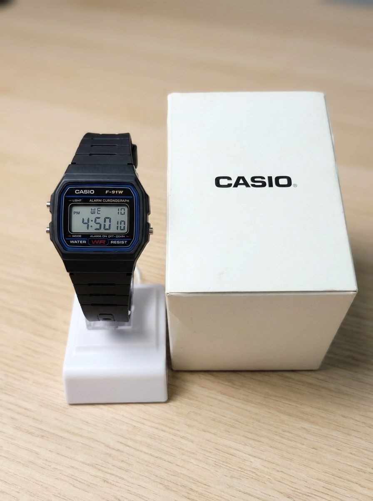
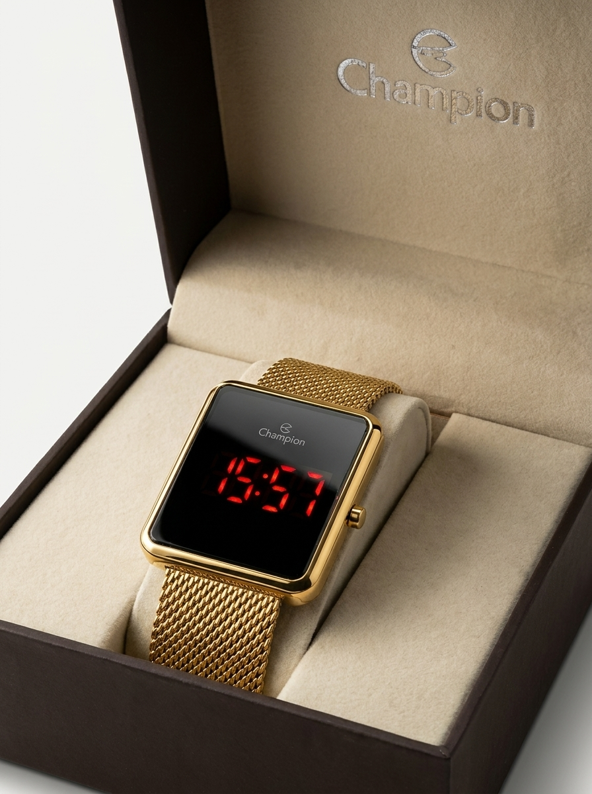
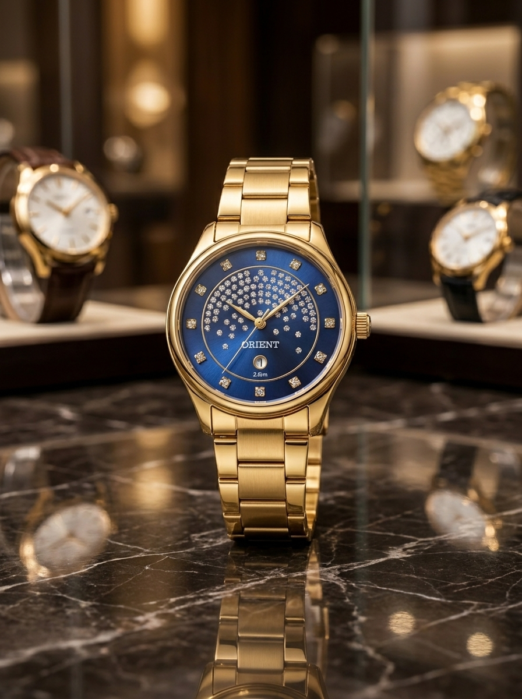
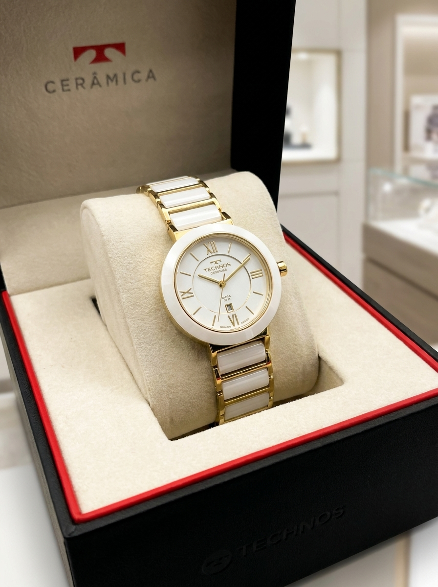
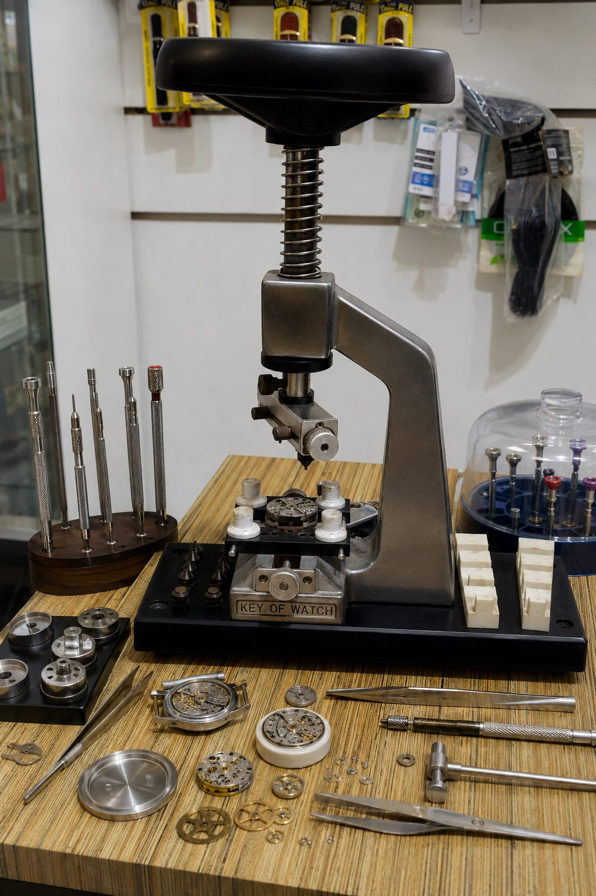
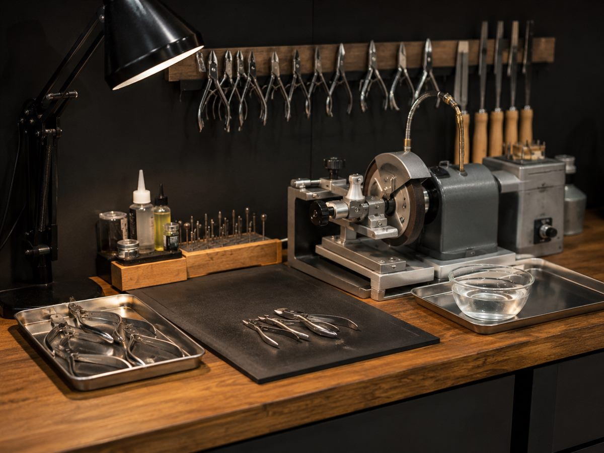
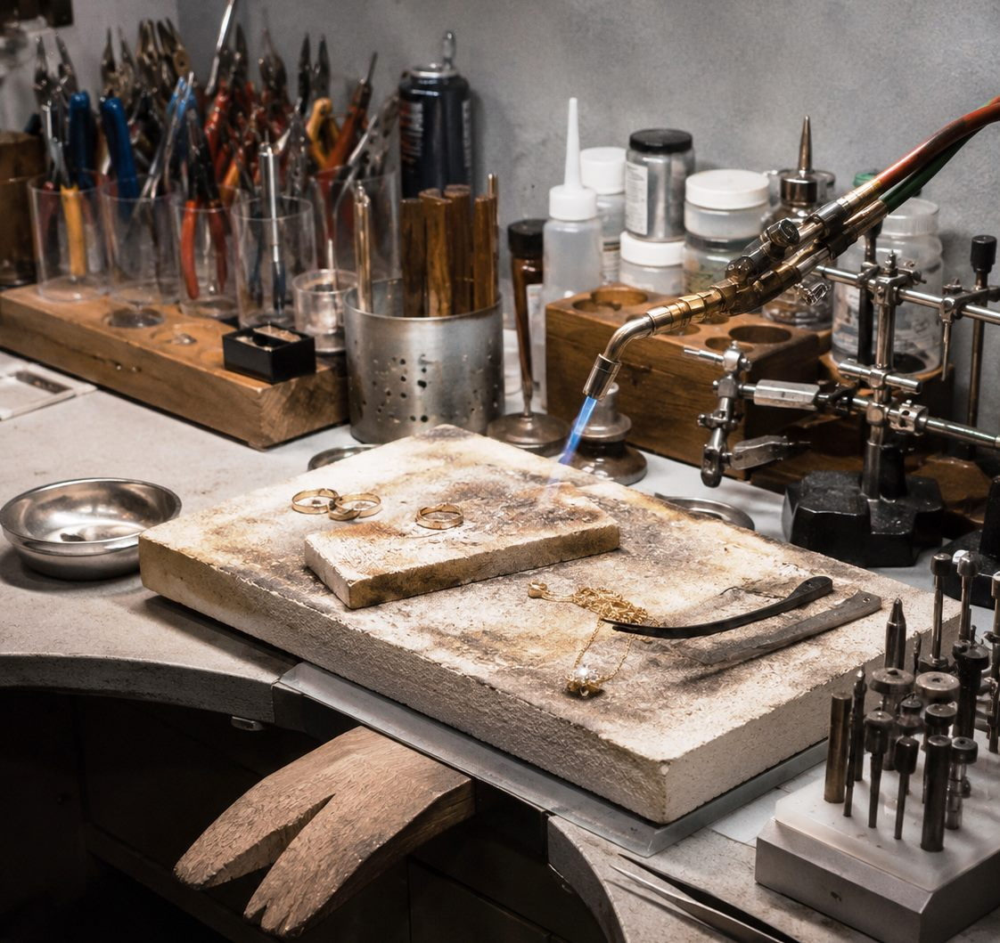

Clássico e preciso
Orient
Elegância para acompanhar sua rotina e seus melhores momentos.
Desde a década de 1980 em Cururupu
Tradição, confiança e inovação em Cururupu e região.
Relógios originais, assistência técnica especializada, conserto de óculos, afiação de alicates, solda de joias e gravações para pendrive, DJs, lojas e eventos.
Quem somos
A história do Studio Seiko começou muito antes do nome existir.
Tudo teve início na década de 1980, quando João Souza deixou o estado de Goiás e chegou a Cururupu, no Maranhão, trazendo consigo o conhecimento, a dedicação e a paixão pela profissão de relojoeiro. Foi assim que nasceu a tradicional Relojoaria Seiko.
Durante muitos anos, a relojoaria se tornou referência em Cururupu e região, conquistando a confiança de gerações de clientes que buscavam qualidade, precisão e serviços especializados.
Em 2003, a família enfrentou um momento muito difícil com o falecimento de João Souza em um acidente de trânsito. Mas o legado deixado por ele continuou vivo através dos ensinamentos transmitidos ao longo dos anos.
Antes mesmo desse período, eu já trabalhava no ramo de gravações, produzindo vinhetas para DJs, gravando músicas em fitas cassete (K7) e CDs, acompanhando a evolução da tecnologia e das necessidades dos clientes. Com o passar do tempo, percebi que poderia unir duas paixões: a relojoaria que aprendi com meu pai e o universo do áudio e da gravação.
Foi dessa união que nasceu o Studio Seiko. Mais do que uma simples mudança de nome, representa a evolução de uma história construída com dedicação, inovação e compromisso com a comunidade.
Hoje, o Studio Seiko reúne venda de relógios originais, assistência técnica especializada, conserto de óculos, afiação profissional de alicates, solda de joias e semijoias, além de gravações para clientes, DJs, empresas e eventos.
Nossa missão continua sendo a mesma desde os tempos da antiga Relojoaria Seiko: oferecer produtos de qualidade, serviços confiáveis e um atendimento diferenciado, honesto e dedicado.
“Tradição, confiança e inovação há décadas fazendo parte da história de nossos clientes.”
Relógios originais
No Studio Seiko você encontra relógios masculinos e femininos originais das melhores marcas, com opções elegantes, modernas e resistentes para todos os estilos.
Elegância para acompanhar sua rotina e seus melhores momentos.


Design digital com acabamento dourado para quem busca estilo e tecnologia.


Consulte modelos e disponibilidade diretamente com nossa equipe.
Ver modelos no WhatsAppSoluções em um só lugar
Do relógio que marcou sua história ao serviço que facilita seu dia, tratamos cada atendimento com atenção e responsabilidade.

Troca de baterias, vidros, pinos, pulseiras e ajustes.
Reparos cuidadosos para recuperar o uso e o conforto.

Afiação profissional para alicates de unha.

Cuidado e acabamento para peças especiais.
Áudio e gravação
Gravação de músicas para pendrive, produção de vinhetas para DJs e comerciais para lojas e eventos.
Solicitar informaçõesPor dentro do Studio
Conheça um pouco da nossa loja, dos relógios e dos serviços realizados no centro de Cururupu.
Confiança construída no balcão
O Studio Seiko cresceu com o atendimento próximo, o trabalho honesto e o cuidado dedicado a cada cliente. É assim que honramos o legado de João Souza e seguimos fazendo parte da rotina de Cururupu.
Estamos no centro de Cururupu
Fale com nossa equipe ou visite a loja. Será um prazer atender você.
EndereçoRua Dom Pedro 2º, Centro